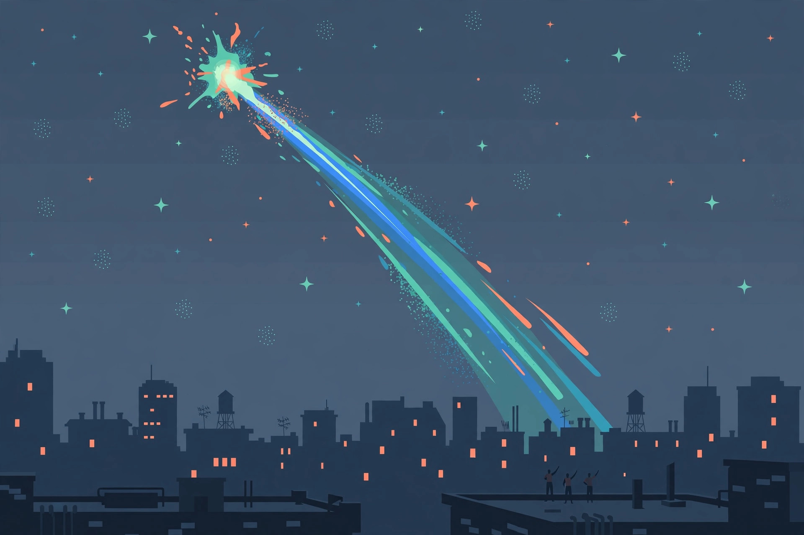

11月21日17時35分ごろ、大阪や神奈川など各地で青や緑の強い光を放つ流れ星（大火球）が確認された。さらに11月22日0時50分ごろにも東京で大火球が流れ、撮影した動画が投稿されている。しし座流星群は11月30日ごろまで活動が続く時期。
チョコレートプラネット松尾駿と藤井隆が、中国で話題の「ハイヒールおじさん」を真似た再現動画を公開。本家と再現を並べた比較動画も大きく拡散し、Instagramではハイヒールを履いて歩くことに挑戦するチャレンジ動画も出始めている。午後には、元ネタの人物が中国の女性靴ブランド創業者で自ら実演販売を行う経営者だという背景説明が広がり、「フィードがハイヒールおじさんだらけ」という声も出ている。
BTS高雄公演の中継などでユンギのパフォーマンスや衣装にファンが称賛を送った。トーク番組「シュチタ」の復活を望む声も広がっている。
Instagramに謎の数字を投稿し、11月24日0時の解禁予告と推測される。S字に配置された「11 24 000」から、ファンの間で発表内容の推測合戦が起きている。
timeleszの菊池風磨が、2027年1月スタートの日テレ系水曜ドラマ『うたおや』で主演。自身初の歌手役と父親役で、地元でしか人気のない歌手がシングルマザーと結婚し、いきなり3人のパパになる役どころ。脚本は岡田惠和。
ホンダの新型フリード（11月20日発売）とMrs. GREEN APPLEのコラボ。メンバー3人揃っての新CMが11月19日に公開され、11月21日から「Hondaミニバン体感フェア」（試乗でオリジナルステッカー、成約で『CEREMONY』2027のチケット抽選）が始まった。
松下洸平や鈴木亮平ら、好きな俳優から言われたい理想の台詞を挙げる動きが広がる。同級生の鈴木亮平・松下洸平、佐藤健、広瀬すずが登場する学園の妄想ストーリー仕立ての投稿が起点の一つになっている。
アリーナツアー「Mr.Children Tour 2026 "Saturday in the park"」の広島グリーンアリーナ公演。11月21日・22日の2日間で、今日22日は15:00開場・16:00開演。会場へ向かうファンの期待の声や、歌詞の美しさに気づいた海外ファンの投稿が並ぶ。
優勝祝賀パレードが今日11月22日11:00から福岡市の明治通り（約2.3km）で開催。パ・リーグ3年連続、日本一2年連続。13時からはPayPayドームでファンフェスティバル2026も。朝7時27分時点ではパレードグッズの列の様子も投稿されている。パレード終了後は、選手を乗せたオープンカーや沿道の黄色い旗の写真・動画の共有がInstagramを中心に広がっている。
イオン限定のボンボンドロップシールで購入報告や交換の呼びかけが広がる。店舗では完売POPや「1人4点まで」の購入制限も出ており、SHEINで売られている類似品の真贋を問う投稿も出ている。
ブルーインパルス奈良飛行に伴う混雑で近鉄奈良線などの各路線に遅延や一部運休が発生した。大和西大寺駅周辺に多くの見物客が集中し、改札を出るまで30分以上かかった人もいた。
韻シスト元メンバーのラッパーBASIが2021年6月14日に死去していたことが、大阪地裁の判決文（2026年10月26日言い渡し）から明らかになった。脱退発表の4日後のことで、公式の発表は見つかっていない。
EXILEコラボのコアラのマーチが11月24日の全国発売を前に一部店舗で並び始める。黒×金の限定パッケージにメンバーの似顔絵コアラが入り、「11/24㈫〜じゃなかったっけ？」という驚きの声とともに購入報告が広がっている。
11月21日17時35分ごろ、大阪や神奈川など各地で青や緑の強い光を放つ大火球が確認された。さらに11月22日0時50分ごろにも東京で大火球が流れ、天体写真家が撮影した動画がThreadsとInstagramに投稿されている。動画にはオリオン座とシリウスが写り、最後に明るく爆発したように見える。別の目撃者も0時49分ごろの明るい光を投稿し、「他にも見た方いますか？」と目撃の確認を求めている。山梨県立科学館の定点カメラ映像では11月21日4時32分ごろの流星も捉えられており、夜を通して複数の目撃が重なった。しし座流星群は11月30日ごろまで活動が続く時期で、12月14日のふたご座流星群ピークに向けた星空観察イベントの告知も並ぶ。
中国で話題の「ハイヒールおじさん」を、チョコレートプラネット松尾駿と藤井隆が真似た再現動画を公開。チョコプラ長田の告知投稿は16K超のいいね、433リポスト、313件の返信を集めた。本家と再現を並べた比較動画は79K超のいいね、1,325リポストと大きく拡散。Instagramではハイヒールを履いて歩くことに挑戦する「チャレンジ」形式の編集動画も出始め、ミームが「再現→比較→挑戦」の型で広がっている。
今日11月22日は日産スタジアムでのスタジアムツアー「MILESixTONES」ファイナル2日目。初日参加者からは「周りがあまり盛り上がっていなかった」「手拍子する人がいなかった」「アンコールも両隣は何も言ってなかった」という、会場の空気への戸惑いの報告が345いいねを集めた。一方で2日目参加予定者からは「急に冷え込むからダウンコートの方が良さそうか」と服装を尋ねる実務的な質問が20件の返信を集めており、初日の実況が2日目参加者の準備の判断材料になっている。
timeleszの菊池風磨が、2027年1月スタートの日テレ系水曜ドラマ『うたおや』（毎週水曜22時）で主演。自身初の歌手役と父親役で、演じるのは地元でしか人気のない歌手・風間五郎。シングルマザーと結婚し、いきなり3人のパパになる。脚本は岡田惠和。11月21日の発表で、公式の紹介リール（本人が役どころを語る）は4.2K likes・210コメントで、コメント欄は祝福一色。「歌は本職なので問題ない」という本人の言葉がそのまま引用されながら広がっている。Threadsでは今朝、公式からの単独仕事の告知に「風磨がいれば大丈夫💜」と喜ぶファンの投稿が出ている。
ホンダの新型フリードが11月20日に発売。Mrs. GREEN APPLEのメンバー3人揃っての新CM「運転がしやすい篇」「荷室が広い篇」（楽曲「#familie」）が11月19日に公開された。Instagramの公式CMリールは78K likes・300コメントで、コメントの中心は大森元貴の運転シーンへの驚き（「もっくんが運転してるなんてびっくり」「なんて貴重な」）。11月21日から12月13日まで「Hondaミニバン体感フェア」が始まり、試乗でオリジナルステッカー、成約でMrs. GREEN APPLE presents『CEREMONY』2027（6月17日）のチケット抽選という、推し活を来店・成約の動機に組み込む設計。Threadsでは11月19日の「契約しましたフリード」という契約報告が3,442 likes・157件の返信と伸びている。一方で、デザインを「後ろから見ると商用車にしか見えない」とする2月の批判の投稿（113件の返信）も検索で掘り返され、新型への賛否の温度差が見える。
松下洸平や鈴木亮平ら、好きな俳優から言われたい理想の台詞を挙げる動きが広がる。同級生の鈴木亮平・松下洸平、佐藤健、広瀬すずが登場する学園の妄想ストーリー仕立ての投稿が起点の一つ。Threadsの検索ではミーム本体の投稿は拾いにくかったが、周辺では「脚本×本編映像」を並べたドラマ台詞シリーズへの称賛（「脚本に書かれた台詞を俳優2人が自分の生理とリズムで発するところに、文字を読むだけではないまったく別の生きたニュアンスを感じてゾクゾクしちゃう！」）や、映画の台詞への共感の投稿が出ており、台詞そのものを味わう語りが広がっている。
アリーナツアー「Mr.Children Tour 2026 "Saturday in the park"」の広島グリーンアリーナ公演。11月21日・22日の2日間で、今日22日は15:00開場・16:00開演。ThreadsのRecentでは今朝、会場へ向かうファンの「楽しんできまーす」「更に進化しまくりのMr.Childrenが観れますよ」という声が並ぶ。広東語の投稿で、歌詞の翻訳を読んで「歌詞がこんなに美しいとは知らなかった」と、どの曲の歌詞が良いか尋ねるものが3,034 likes・138リポストと伸びている。Instagramではタワーレコード広島店の店内ジャック（アルバム『産声』の展示やファンのメッセージボード）や、会場前でグッズタオルを掲げるファンの動画、バックステージの様子を写したカルーセルが並ぶ。広島公演はソールドアウトと伝えられている。
優勝祝賀パレードが今日11月22日11:00から福岡市の明治通り（呉服町〜赤坂の約2.3km、約30分）で開催。パ・リーグ3年連続、日本一2年連続。13時からはPayPayドームでファンフェスティバル2026も。ThreadsのRecentでは今朝、「もう〜この一発目から好っきやねん ホークスの強さここにあり✨」というパレードへの期待の声や、「親父が南海ホークスファンの影響で福岡ソフトバンクホークス」と、親から受け継いだファン歴を語る投稿が並ぶ。Instagramではパレードの公式告知ポスターやテレビ特番の生中継告知、監督の名前と背番号90のユニフォームを着たファンの写真が並ぶ。朝7時27分時点ではパレードグッズ（チアタカぬい）の列の様子も投稿されている。
日産スタジアムでのスタジアムツアー「MILESixTONES」ファイナル2日目当日。初日は7万人を動員し、終了後は制作開放席からのアンコールの実況など参加の余韻が共有された。今朝のThreadsでは「日産スタジアムをぱんぱんにして7万人をぶち上げたあとにこんなほわほわしたラジオやってるとこがSixTONESさんの愛おしいとこなんだよなー」と、初日終了後のラジオの余韻を語る投稿が出ている。初日の会場の静けさへの戸惑い（02:46の観測）とは別に、2日目当日は初日の余韻とラジオのゆるさへの愛着が朝の話題になっている。
イオン限定のボンボンドロップシールで購入報告や交換の呼びかけが広がる。Threadsでは、SHEINで売られている類似品について「このボンボンドロップシールは本物？偽物？」「シール詳しい方々教えて欲しい」と真贋を問う投稿が106いいね・136件の返信を集め、今日14:31には「見つけた〜〜〜！！！！！」という購入報告も出ている。Instagramでは店舗側の投稿が中心で、セブンイレブン境染谷店の露店販売（フロッキー各種299円）、くまざわ書店 京都ポルタ店の「完売」手書きPOP、BE★POP柏店の「11月21日シール入荷しました」という入荷告知が並ぶ。ちいかわ版では楽天市場での最大1,000円OFFクーポンの告知もあり、しずくちゃん版（ミニ）は「1人4点まで」の購入制限付きで先着販売されている。サンリオ食玩と同じ「買う→交換」の型で、真贋の問いまでセットで立ち上がっている。
EXILEコラボのコアラのマーチが11月24日（火）の全国発売を前に、一部店舗で並び始める。Threadsでは「コアラのマーチ🐨見つけた〜！11/24㈫〜じゃなかったっけ？」という発売日への驚きの投稿が412いいね・25件の返信を集め、「EXILEとコラボしたコアラのマーチ パパが買ってきてくれた💛」という購入報告も531いいね・29件の返信と伸びている。Instagramでは黒×金の限定パッケージの写真が投稿され、コアラの顔がEXILEメンバーの似顔絵になり、手書き風の名前（あつし、けんち、しょうきち）が入っている。ファンのグッズ紹介では、コアラのマーチ×EXILEのポーチ（メンバー14人の名前とツアー日程入り）やキャップも並ぶ。フライング販売が「見つけた」報告の連鎖を生み、公式の発売日を待たずに話題が先行している。
韻シスト元MCのラッパーBASIが2021年6月14日に亡くなっていたことが、大阪地裁の判決文（2026年10月26日言い渡し、著作権をめぐる民事裁判）から明らかになったと報じられた。脱退発表の4日後のことで、公式の発表は見つかっていない。Threadsでは今日14:40に「なんかよくわかんない感情 今日すごく時間過ごせてたのに急にﾀﾞｳﾅｰ…。お休みしてる、だけだと思ってた。でも音楽は続くよ R.I.P」という追悼の投稿が出ている。5年半の時間を経て判決文から判明したという経緯そのものが話題の核になっており、ファンの戸惑いと音楽への惜しみが並走している。
航空自衛隊ブルーインパルスが奈良基地開庁70周年と「飛鳥・藤原の宮都」ユネスコ世界文化遺産登録を祝って、今日昼前に奈良県上空で展示飛行を行った。平城宮跡上空でハートや桜を描くなどし、その後、法隆寺や石舞台古墳、金峯山寺などの上空を飛行して岐阜基地へ戻った。見物客が大和西大寺駅周辺に集中し、近鉄の大阪線・奈良線・京都線・橿原線で遅延が発生。報道では、築山—大和高田間の人身事故（10:50ごろ）も重なり、12時半時点で30分程度遅延している列車もあった。Threadsのトレンドの元投稿は「ブルーインパルス奈良飛行 近鉄奈良線は人手を捌ききれずにエライ事になってます。近鉄は死亡しまし…」。検索では、岐阜で帰還中のブルーインパルスを目撃した「これってブルーインパルス？？」という投稿（181いいね）や、14:41の「ブルーインパルスが奈良から帰ってきました👋」という投稿が拾えた。SNSでは「乗れないループ」「大和西大寺駅が夢洲級に混雑」などの嘆きも並ぶ。
午後の変化として、元ネタの人物の背景説明が広がっている。「中国の女性靴ブランドの創業者で現在も経営者です。2度の事業失敗と日本円で約1億円の負債をかかえました。そこから自ら実演販売を行って日本円で数十億円まで復活を成し遂げた方です。人間工学に基づいた履き着心地が良い靴を開発するために、自分で履いて確かめているのがバズッてしまった」「変なおじさんではありません」という投稿が943いいね・10件の返信を集めた。別に「私も今フィードがハイヒールおじさんだらけです🤣🤣新作がどんどん出てきて松尾さんたちも大変」という、フィードが埋まる様子を語る投稿も出ている。ミームは「再現→比較→挑戦」に、背景説明の共有とフィードの占有が加わる段階に入っている。
パレード（11:00〜約30分）は終了し、写真・動画の共有フェーズへ。Instagramでは、選手を乗せたオープンカー（白いトヨタやジープ、ピンクのコンバーチブル）が一蘭本社前や博多大橋を進み、沿道の黄色い旗の群れを写した投稿が並ぶ。ゴール地点のリールでは「2年連続 日本一優勝パレード」の文字とともに、選手がぬいぐるみを手に手を振る様子が写っている。13時からはPayPayドームでファンフェスティバル2026も進行中。
大火球の動画（0時50分・東京）
0時50分の大火球を撮影した動画。オリオン座とシリウスが写り、最後に明るく爆発したように見える。1,200超のいいね、42リポスト。
珍しい現象を記録として残し、同じ空を見ていた人と共有したい気持ちが伝わる。最後の爆発のような明るさが「見た」という実感の核になっているように見える。
大火球の目撃投稿（0時49分）
0時49分ごろの明るい光を「隕石？流れ星？」と問いかけ、他にも見た人がいるか確認を求める投稿。
突然の出来事への驚きと、それが自分だけの見間違いではないか確かめたい気持ちが伝わる。目撃の共有がそのまま話題の燃料になっているように見える。
ハイヒールおじさん再現の告知
チョコプラ長田が藤井隆とのコラボ再現動画を告知。16K超のいいね、433リポスト、313件の返信。
海外ミームへの便乗ではなく、本人同士のコラボという「実現」を楽しませる狙いが伝わる。コメント欄の盛り上がりが再現の出来を測る場になっているように見える。
ハイヒールおじさん比較動画
本家と再現を並べた比較動画。79K超のいいね、1,325リポスト。
再現の上手さを比べること自体がコンテンツ化している。元ネタを知らない人にも「比較」という形が入り口になっているように見える。
シュチタ復活を望む声（ユンギ）
批判されるのを承知でトーク番組「シュチタ」の復活を願う投稿。1,589いいね、47件の返信。
パフォーマンスへの称賛とは別に、素の姿で話すユンギへの愛着が語られている。「難しいのはわかってます」と前置きする慎重さが、願望の強さの裏返しにも見える。
山田涼介の謎数字を読み解く
S字配置の「11 24 000」から「11月24日0時に情報解禁」と推測し、個人アカウントである点に注目する投稿。
数字の謎解きそのものがファンの楽しみになっており、発表の「前夜」の推測合戦が話題を広げているように見える。
SixTONES初日の会場レポート
周りの盛り上がりのなさに戸惑いつつ「ぼっちで楽しんでやった」とつづる初日参加者の報告。345いいね。
コールや手拍子の少なさが「自分の周りだけ？」という不安になりつつ、楽しんだ事実を肯定する語りで締めている。初日ならではの空気の記録になっているように見える。
SixTONES 2日目の服装相談
急な冷え込みで「ダウンコートの方が良さそうか」と横浜在住のファンに尋ねる投稿。20件の返信。
初日の実況が2日目参加者の準備の判断材料になっており、ライブ当日の話題が実務的な相談に直結しているように見える。
大火球のリール（Instagram）
0時50分の大火球の動画がリールでも投稿され、2.4Kのいいね。
Threadsと同じ映像がInstagramにも流れ、目撃の共有がプラットフォームを横断しているように見える。
ハイヒール・チャレンジ動画（Instagram）
ハイヒールを履いて歩くことに挑戦する編集動画。ミームがチャレンジ形式でも広がり始めている。
再現や比較とは別に、一般人が自分で試す「チャレンジ化」がミームの次の段階として出てきているように見える。
流星の定点カメラ映像（Instagram）
山梨県立科学館の定点カメラ映像で、11月21日4時32分ごろの流星を捉えたもの。
一般の目撃報告とは別に、科学館の記録映像が「見たものはこれだった」という答え合わせの役割を果たしているように見える。
菊池風磨の単独仕事への喜び
timelesz公式からの単独仕事の告知に「風磨がいれば大丈夫💜」と喜ぶ投稿。今朝08:21、32いいね。
グループの公式アカウントが個人の仕事を告知してくれたこと自体が嬉しさになっており、「風磨がいれば大丈夫」という信頼の言葉が、発表への祝福の形になっているように見える。
うたおや紹介リール（Instagram）
菊池本人が『うたおや』の役どころを紹介する公式リール。4.2K likes、210コメントで、コメント欄は祝福一色。
本人の言葉で「歌は本職なので問題ない」と語る姿が、ファンの祝福の受け皿になっている。売れない歌手という役と現実のトップアイドルというギャップが、紹介そのものの面白さになっているように見える。
フリードの契約報告
「けけけけ契約しましたフリード トントン拍子すぎて」とつづる契約報告。3,442 likes、157件の返信。展示で入った車がその日のうちに無くなるという勢いの語り。
買う決断の速さそのものが伝わってくる。コラボの話題と購入の決断が、同じタイミングで語られているように見える。
フリードCM本編リール（Instagram）
Mrs. GREEN APPLE公式のフリードCM本編リール。78K likes、300コメント。コメントの中心は大森元貴の運転シーンへの驚き。
普段見られない姿が見られたことが拡散の核になっている。楽器を一緒に運べるという物語性を読み取る声もあり、CMが単なる車の紹介ではなくバンドの物語として受け取られているように見える。
フリードのデザインへの批判（2月の投稿）
「新型のフリード、皆さんどう思いますか？なんか後ろから見ると商用車にしか見えなくて、とてもダサいと思ってます」とつづる投稿。113件の返信。発売のタイミングで検索に掘り返された古い投稿。
CMへの称賛とは別に、デザインへの賛否が根強く残っていることが見える。発売の話題が、過去の評価を呼び戻すきっかけになっているように見える。
Mr.Childrenの会場へ向かう声
「楽しんできまーす」「更に進化しまくりのMr.Childrenが観れますよ」とつづる、開演前の短い期待の声。今朝08:39〜08:40。
開演を前にした短い期待の声が、そのまま当日の空気を伝えている。「進化」という言葉が、長く見てきたファンの期待の表れにも見える。
Mr.Childrenの歌詞への気づき
歌詞の翻訳を読んで「歌詞がこんなに美しいとは知らなかった」と、どの曲の歌詞が良いか尋ねる広東語の投稿。3,034 likes、138リポスト。
言葉の壁を越えて歌詞の美しさに気づいた海外ファンが、ファン同士のおすすめを募っている。ライブ当日に、音楽そのものへの関心が言葉の話題として出ているように見える。
ホークスのファン歴の継承
「産まれも育ちも東京」「親父が南海ホークスファンの影響で福岡ソフトバンクホークス」と、自分のファン歴の由来を語る投稿。今朝08:45。
パレードの当日に、自分のファン歴の由来を語る動き。親から子へ受け継がれる応援が、チームへの愛着の形として語られているように見える。
ホークスのパレード告知ポスター（Instagram）
11月22日11:00〜約30分、呉服町〜赤坂の約2.3kmというパレードの告知ポスター。3年連続のパ・リーグ制覇と2年連続の日本一が添えられている。
当日の朝に告知ポスターが共有され、観覧の目安として使われている。数字が並ぶことで、祝賀の実感と結びついているように見える。
SixTONESのラジオの余韻
「日産スタジアムをぱんぱんにして7万人をぶち上げたあとにこんなほわほわしたラジオやってるとこがSixTONESさんの愛おしいとこ」とつづる投稿。今朝08:45。
7万人のスタジアムの熱とラジオのゆるさのギャップが、そのまま愛着の語りになっている。初日の余韻が、2日目当日の朝の話題として続いているように見える。
台詞の演じられ方への称賛
脚本と本編映像を並べたドラマ台詞シリーズに「脚本に書かれた台詞を俳優2人が自分の生理とリズムで発するところに、文字を読むだけではないまったく別の生きたニュアンスを感じてゾクゾクしちゃう！」とつづる投稿。25いいね。
台詞を「読む」ことと「演じる」ことの違いを味わう語りで、ミームの周辺に、台詞そのものへの関心が広がっているように見える。
ボンボンドロップシールの真贋を問う投稿
SHEINで350円で売られている類似品について「本物？偽物？」「シール詳しい方々教えて欲しい」と問いかける投稿。106いいね、136件の返信。
安く買えた喜びと「本物かどうか分からない」不安が同居し、詳しい人への知識の問いかけになっているように見える。人気シールの周辺で、真贋の判別自体がファン同士の知識共有の場になっている。
ボンボンドロップシールの購入報告
今日14:31の「見つけた〜〜〜！！！！！」という購入報告。
探し回ってようやく見つけた喜びが、そのまま報告の形になっているように見える。短い叫びが「見つけた」報告の定型になっている。
コアラのマーチのフライング発見
「コアラのマーチ🐨見つけた〜！11/24㈫〜じゃなかったっけ？」という発売日への驚きの投稿。412いいね、25件の返信。
発売日より早く並んでいることへの驚きが、発見報告の核になっているように見える。公式の発売日を待たずに「見つけた」ことが、そのまま拡散の入口になっている。
コアラのマーチの購入報告
「EXILEとコラボしたコアラのマーチ パパが買ってきてくれた💛」という購入報告。531いいね、29件の返信。
家族が買ってきてくれたというエピソードが、コラボ商品の購入報告に温かさを添えているように見える。推しの顔のコアラが、家族の買い物の話題にもなっている。
BASIを追悼する投稿
「お休みしてる、だけだと思ってた。でも音楽は続くよ R.I.P」とつづる今日14:40の追悼の投稿。
活動休止だと思っていた相手の死を、判決文の報道で知った戸惑いが「よくわかんない感情」という言葉になっているように見える。公式発表のないまま時間が過ぎたことへの戸惑いと、音楽への惜しみが並走している。
ブルーインパルスを岐阜で目撃
「そろそろ奈良から帰って来るのかなぁと思って外出たら急に現れた。岐阜では展示飛行ないって聞いてたから。これってブルーインパルス？？」という投稿。181いいね、9件の返信。
帰還中の編隊を偶然目撃した驚きと、それが本当にブルーインパルスなのか確かめたい気持ちが伝わる。飛行ルートの外側でも、目撃の共有が広がっているように見える。
ハイヒールおじさんの背景説明
中国の女性靴ブランド創業者の実演販売の経緯を説明し「変なおじさんではありません」とつづる投稿。943いいね、10件の返信。
ミームとして笑われている人物の背景を知ってほしくて、丁寧に経歴を書いているように見える。「変なおじさんではない」という一文が、笑いの対象から尊敬の対象への見直しを促している。
ボンボンドロップシールの完売POP（Instagram）
手書きの「ボンボン ドロップシール 完売」のPOPを掲げた店頭の写真。
完売の告知そのものが、品薄の証拠として投稿されているように見える。買えなかった人への情報共有と、人気の裏付けの両方の意味を持っている。
コアラのマーチ×EXILEのパッケージ（Instagram）
黒×金の限定パッケージで、コアラの顔がメンバーの似顔絵になった箱の写真。
パッケージの似顔絵コアラが、そのまま「推し探し」の材料になっているように見える。箱の写真1枚で、コラボの内容が伝わる形になっている。
ホークスパレードのゴール地点リール（Instagram）
「2年連続 日本一優勝パレード」の文字とともに、オープンカーの選手が手を振る様子を写すリール。190いいね。
パレード終了後の共有フェーズでは、沿道の熱気そのものより、選手の姿を収めた映像が余韻の記録として回っているように見える。
初日参加者から「周りがあまり盛り上がっていなかった」「手拍子する人がいなかった」という報告。大きな対立ではなく、「自分の周りだけ？」という戸惑いの共有になっている。初日の空気の記録が、2日目参加者の実務相談につながっている。
CMへの称賛とは別に、デザインを「後ろから見ると商用車にしか見えない」とする2月の批判の投稿が、発売のタイミングで検索に掘り返された。新型への賛否の温度差が根強く残っていることが見える。大きな対立ではなく、称賛と批判が同じタイミングで可視化される形になっている。
ブルーインパルス見物客で大和西大寺駅がパンクし、改札を出るまで30分以上かかった人もいた。近鉄の大阪線・奈良線・京都線・橿原線で遅延が発生し、SNSでは「乗れないループ」「大和西大寺駅が夢洲級に混雑」などの嘆きが並ぶ。別に人身事故も重なり、遅延が30分程度に及ぶ列車もあった。展示飛行への歓声と、駅の混雑への嘆きが同じタイミングで広がっている。
SHEINで350円で売られている類似品について「本物？偽物？」と問う投稿に136件の返信が集まった。人気シールの周辺で模倣品・類似品の流通が話題化している。イオン限定の品薄もあり、店舗の完売POPや「1人4点まで」の購入制限も出ている。
流れ星＝目撃の共有と確認、ハイヒールおじさん＝笑い・比較・チャレンジ化、ユンギ＝称賛と番組復活の願い、山田涼介＝謎解き・推測、SixTONES＝初日レポートと2日目の実務相談。／08:46時点：菊池風磨＝発表への祝福と信頼、フリード＝契約の勢いとCMへの驚き、俳優の台詞＝妄想と台詞の味わい、Mr.Children＝当日への期待と歌詞への気づき、ホークス＝パレード当日の高揚とファン歴の継承、SixTONES＝初日終了後の余韻。／14:46時点：ボンボンドロップシール＝購入報告と交換の呼びかけ＋真贋の検証、コアラのマーチ＝フライング発見の驚きと購入報告、BASI＝追悼と戸惑い、近鉄＝混雑への嘆きと飛行への歓声、ハイヒールおじさん＝背景説明の共有とフィードの占有、ホークスパレード＝終了後の写真・動画の共有と余韻。
流れ星は天文・星空関心層と一般の目撃者、ハイヒールおじさんはお笑い・ミーム関心層、ユンギ・山田涼介・SixTONESは各ファン層（女性寄りの印象）。統計ではなく印象。／08:46時点：菊池風磨はtimeleszファン層、フリードはMrs. GREEN APPLEファン層と車の購入検討層、俳優の台詞はドラマ・俳優関心層、Mr.Childrenはファン層と海外ファン、ホークスは地元・福岡のファン層と家族で受け継ぐファン層、SixTONESはファン層（女性寄りの印象）。統計ではなく印象。／14:46時点：ボンボンドロップシールはシール・文具収集層と親子層、コアラのマーチはEXILEファン層とお菓子好き層、BASIはヒップホップ・韻シストのファン層、近鉄・ブルーインパルスは航空ファンと地元・奈良の見物客、ハイヒールおじさんはお笑い・ミーム関心層、ホークスパレードは地元・福岡のファン層。統計ではなく印象。
流れ星は目撃の共有が「他にも見た？」という確認の連鎖になっており、天文系のアカウントや科学館の映像が「見たものはこれだった」という答え合わせの役割を果たしている。ライブ会場の初日レポートは、2日目参加者の服装や持ち物の判断材料になっており、公式が初日の会場の様子（気温・服装の目安）を早めに発信すると、2日目参加者の不安が減りやすい。ハイヒールおじさんは再現→比較→チャレンジと型が進んでおり、元ネタを知らない層にも「比較」が入り口になっている。／08:46時点：フリードはCMへの称賛と契約報告が並走する一方、デザインへの賛否も掘り返されている。試乗フェアの特典が来店の動機になっており、推し活と車の買い物の結びつきが、ディーラーへの来店のハードルを下げる形になっている。菊池風磨の発表は「売れない歌手が3人のパパに」という現実とのギャップ自体が話題のフックになっている。三連休2日目はライブとパレードが各地で重なり、会場周辺の実況が「行く前の下見」として拡散している。／14:46時点：ボンボンドロップシールはサンリオ食玩と同じ「買う→交換」の型で、真贋の問いまで並走している。店舗の完売POPや購入制限が品薄の証拠として拡散しており、限定品の周辺では交換の場と真贋の話題がセットで立ち上がる。コアラのマーチはフライング販売が「見つけた」報告の連鎖を生み、公式の発売日を待たずに話題が先行している。ブルーインパルスは展示の感動と駅の混雑の嘆きが同居し、見物客の移動と地元の日常の移動がぶつかる場面になっている。
示唆 1. 大火球の目撃は「他にも見た？」という確認の連鎖で広がり、天体写真家や科学館の映像が答え合わせの役割を果たす。偶然の自然現象でも、目撃の共有と専門的な記録が組み合わさると、その夜だけの小さなコミュニティが生まれる。
示唆 2. 海外ミームは芸人の再現を経て比較動画が回り、一般人のチャレンジ化へ広がる。元ネタを知らない層には「比較」が入り口になり、再現の上手さを比べること自体がコンテンツ化する。
示唆 3. ライブ初日の参加者レポートは、2日目参加者の実務的な準備（服装など）の判断材料になる。初日の「会場の空気」や「気温・服装の目安」を早めに共有する仕組みがあると、2日目以降の参加者の不安が減り、体験の質にもつながる。
示唆 4. フリード×Mrs. GREEN APPLEは、試乗でグッズ、成約でライブ招待という「推し活を来店・成約の動機にする」設計になっている。ディーラー来店のハードルを推しの特典で下げる型で、CMへの称賛と契約報告が同じタイミングで伸びている。
示唆 5. 菊池風磨の『うたおや』は、「売れない歌手が3人のパパに」という現実とのギャップ自体が話題のフックになっている。発表の面白さが役どころのギャップにあり、ギャップのある設定がそのまま拡散の材料になる。
示唆 6. 三連休2日目はライブとパレードが各地で重なり、会場周辺の実況（グッズ列、交通規制）が「行く前の下見」として拡散している。会場側の当日の情報が早めに出ると、行く人の判断がしやすくなり、体験の質にもつながる。
示唆 7. ボンボンドロップシールはサンリオ食玩と同じ「買う→交換」の型で、発売直後から交換の呼びかけと真贋の問いが並走する。人気シールでは「本物かどうか」の判別自体がファン同士の知識共有になり、店舗の完売POPや購入制限が品薄の証拠として拡散する。限定品の周辺では、交換の場と真贋の話題がセットで立ち上がる。
示唆 8. コアラのマーチ×EXILEは、全国発売（11/24）の前に一部店舗で並び始め、「発売日じゃなかったっけ？」という驚きがそのまま拡散の入口になっている。フライング販売は「見つけた」報告の連鎖を生み、公式の発売日を待たずに話題が先行する。パッケージのメンバー似顔絵コアラが、ファンの「推し探し」の材料にもなっている。
示唆 9. ブルーインパルスの奈良飛行は、展示そのものの感動と、駅の混雑・遅延の愚痴が同じタイミングで広がった。イベントの集客が交通インフラの容量を超えると、「乗れないループ」という嘆きが話題のもう一つの顔になる。見物客の移動と地元の日常の移動がぶつかる場面では、事前の分散・誘導の情報が体験の質を左右する。